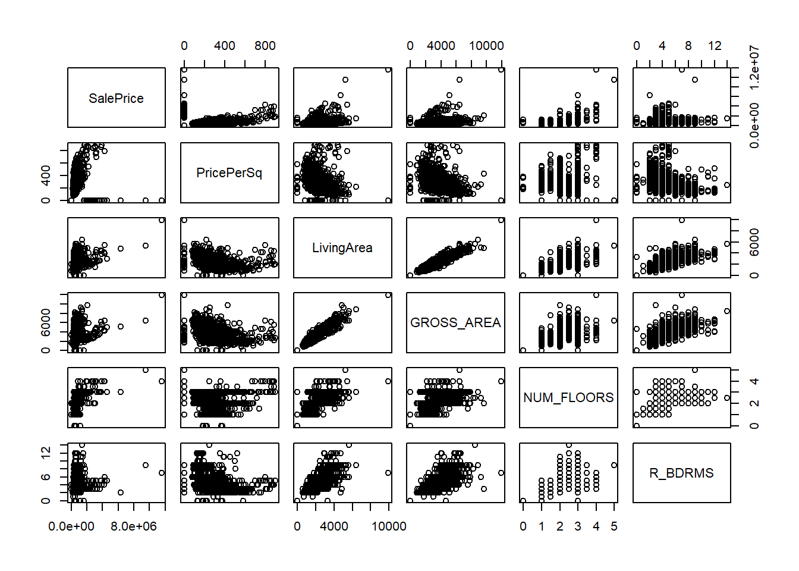
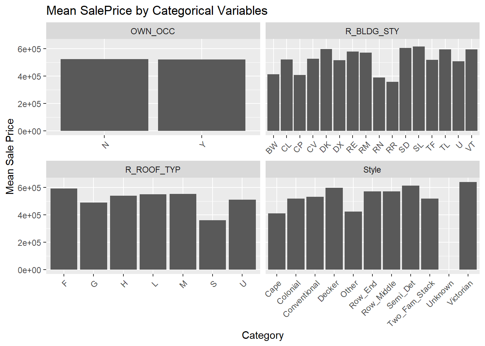

library(tidyverse)
library(sf)
library(caret)Multivariate Regression and Model Selection with 
11.118/11.218 Applied Data Science for Cities
Introduction
This week begins our journey into machine learning. Ken Steif’s book chapter walks through an example using Boston housing data, showing how to build, apply, and evaluate a predictive model for home prices. We will build our study on this example, and continue to explore more models.
Data Processing
Get to know the variables
We’ll be working with the CSV dataset containing sale prices and housing characteristics for homes sold in Boston between August 2015 and August 2016. The data used in this tutorial is a subset of a larger dataset assembled from here. You can explore the full data dictionary here.
Read in the dataset using read_csv() and take an initial look using functions like glimpse()
boston <- read_csv("../data/boston_house_price_collapse.csv")
#head(boston)A few notes:
- The
SalePricevariable is the target we want to predict. - Other columns describe building characteristics — such as square footage, number of floors, and number of bedrooms.
- Some variables are numeric (
dbl), while others are categorical (chrorfct).
Question: Based on your first observation, which variables do you think might be strong predictors of house price? Which ones seem less useful?
EDA and data processing
Before feeding any data into a model, we need to understand and clean it. Every dataset is different, but there are some key steps you should always consider:
Understand data structure:
str(),glimpse()are useful to get to know the details of variables we are dealing with. Numeric and categorical variables require different treatment in a model later on so this is something to keep in mind. We will also see in our case,parcel_nois just an identifier and is not useful for predicting price.Handle missing values.
is.na(),sum(is.na(...)),colSums(is.na(...))can help identify which variables have missing values and how many. But how will deal with them (drop, fill, or flag) will depend on variable contexts and further inspection.Look at distributions. This is an important step before fitting a regression model because it helps guide feature selection and transformation. We will take a closer look at how these relationships show up in different types of variables:
Continuous variables
boston |>
select(SalePrice, PricePerSq, LivingArea, GROSS_AREA, NUM_FLOORS, R_BDRMS) |>
pairs()
The pairs() function creates a pairwise scatter plot matrix, which lets you visually examine the relationships between multiple variables at once. In the graph, we usually look for the following:
Top row (
SalePriceas Y-axis):These show how each predictor relates to the outcome. If you see an upward trend (a roughly linear increase withSalePrice), that predictor is likely to be a strong predictor of price.Relationships between predictors: Look for predictors that are highly correlated with each other (a sign of multicollinearity). For instance,
LivingAreaandGrossAreamay appear nearly linear in their scatterplot. If you calculate the Pearson correlation, it’s about 0.94. This means they contain overlapping information.- Depending on the modeling method (e.g., linear regression vs. tree-based methods), multicollinearity may or may not be a serious concern, but it’s always worth noting.
Pattens, outliers and clusters. These visual cues in pairwise plots help you decide whether a linear model is appropriate, and whether certain data points might influence your results. For example:
The variable
PricePerSqmay look odd with a bunch of y values at x=0.PricePerSqhere is a derived variable, calculated asSalePrice / LivingArea. Since it’s directly related to the outcome, it should not be used as a predictor ofSalePrice.You’ll also notice clear outliers especially for luxury homes that have extremely large sale prices. This should match what you would see in the histogram of
SalePrice. Most homes are priced under $1 million, but a small number of high-end homes stretch the distribution far to the right.
Categorical variables
You can also try making scatterplots with categorical variables (e.g., by including them in a pairs() plot). But the results often look strange or uninformative, because points just line up vertically at two or three x-values. A better approach is to compare the average outcome across the categories. For example, you can group the data by a variable like Style and compute the mean Saleprice for each category:
boston |>
select(SalePrice, Style, OWN_OCC, R_BLDG_STY, R_ROOF_TYP) |>
filter(SalePrice <= 1000000) |>
pivot_longer(-SalePrice, names_to = "Variable", values_to = "Value") |>
group_by(Variable, Value) |>
summarise(mean_price = mean(SalePrice, na.rm = TRUE)) |>
ggplot() +
geom_col(aes(x = Value, y = mean_price),position = "dodge") +
facet_wrap(~ Variable, scales = "free_x") +
theme(axis.text.x = element_text(angle = 45, hjust = 1)) +
labs(y = "Mean Sale Price", x = "Category", title = "Mean SalePrice by Categorical Variables")
When examining categorical variables, we’re not looking for a linear trend, because the categories don’t have a natural order or numeric spacing. Instead, we focus on two main things:
Rare or problematic categories. Just like with missing values in numeric variables, rare categories can cause problems in modeling. For example, if we look at the
Stylevariable, we might see a category labeled “Unknown” and it only appears twice in the dataset. Such categories don’t offer enough data to reliably estimate their effect, may introduce noise, and might need to be removed or combined.Differences between groups. We want to know if the categories differ meaningfully in the outcome variable. If all the categories have similar average sale prices, it means the variable doesn’t explain much of the variation in price and is likely a weak predictor. In our case,
OWN_OCCseems to have little impact on sale price.
Build a basic linear model
We have found a few flags. Let’s first remove a few variables that look redundant or irrelevant, and try a simple linear model to see how things look.
modeldata <- boston |>
select(-c(Parcel_No, PricePerSq, LU, R_BLDG_STY,
Latitude, Longitude))
lm_model <- lm(data = modeldata, SalePrice ~ .)
summary(lm_model)
Call:
lm(formula = SalePrice ~ ., data = modeldata)
Residuals:
Min 1Q Median 3Q Max
-1581568 -166556 1954 151317 6587294
Coefficients:
Estimate Std. Error t value Pr(>|t|)
(Intercept) 403514.45 195844.15 2.060 0.039539 *
LivingArea 561.47 46.15 12.167 < 2e-16 ***
StyleColonial -194193.34 50285.64 -3.862 0.000117 ***
StyleConventional -118739.98 57914.28 -2.050 0.040517 *
StyleDecker -68635.51 81578.33 -0.841 0.400293
StyleOther 10631.17 54324.84 0.196 0.844875
StyleRow_End 150699.85 76959.61 1.958 0.050401 .
StyleRow_Middle 354156.20 78259.10 4.525 6.52e-06 ***
StyleSemi_Det -79913.07 73357.63 -1.089 0.276174
StyleTwo_Fam_Stack 18779.30 63061.78 0.298 0.765904
StyleUnknown -510897.38 283123.23 -1.805 0.071359 .
StyleVictorian -403453.48 114498.84 -3.524 0.000439 ***
GROSS_AREA -185.93 28.24 -6.583 6.41e-11 ***
NUM_FLOORS 183096.26 38356.10 4.774 1.99e-06 ***
R_BDRMS -33113.21 11177.31 -2.963 0.003101 **
R_FULL_BTH 203714.47 21610.53 9.427 < 2e-16 ***
R_HALF_BTH 82726.93 21699.68 3.812 0.000143 ***
R_KITCH -264426.16 32033.43 -8.255 3.37e-16 ***
R_FPLACE 176888.99 16043.91 11.025 < 2e-16 ***
OWN_OCCY 19675.45 23567.76 0.835 0.403941
R_ROOF_TYPG 170755.27 42921.53 3.978 7.28e-05 ***
R_ROOF_TYPH 157977.62 50487.71 3.129 0.001789 **
R_ROOF_TYPL 164093.91 75333.10 2.178 0.029548 *
R_ROOF_TYPM 334724.05 54660.45 6.124 1.17e-09 ***
R_ROOF_TYPS 315239.92 203916.34 1.546 0.122339
R_ROOF_TYPU 321580.85 187673.74 1.714 0.086831 .
R_TOTAL_RM -19855.50 8206.89 -2.419 0.015669 *
YR_BUILT -298.72 98.63 -3.029 0.002500 **
---
Signif. codes: 0 '***' 0.001 '**' 0.01 '*' 0.05 '.' 0.1 ' ' 1
Residual standard error: 396300 on 1457 degrees of freedom
Multiple R-squared: 0.5784, Adjusted R-squared: 0.5705
F-statistic: 74.02 on 27 and 1457 DF, p-value: < 2.2e-16Model Interpretation
- Coefficients: Effect Size
The Estimate tell us how each predictor is associated with SalePrice, assuming all other variables are held constant. The sign of the values (+ or -) tell you the direction of the relationship. The Standard Error is about how certain we are about the estimate, smaller values mean more confidence.
- Then we might see a few issues:
GROSS_AREAis negatively associated with housing price, so isR_BDRM, which doesn’t make intuitive sense. This relates back to the multicollinearity issue we’ve spotted. When this happens, the model struggles to disentangle their individual effects.
For continuous variables, the values of Estimate represent how much SalePrice changes for a 1-unit increase in the predictors. If LivingArea has a coefficient estimate of 500, it means for each additional square foot, price increases by $500, assuming everything else stays the same.
For categorical variables, one category is used as the reference group, and the others are compared against it. For example, Style includes 11 types of housing style, R will pick one (like “Cape”) as the base. if the coefficient for "Colonial" is -190,000, it means homes with the "Colonial" style are predicted to cost $190,000 less than "Cape" style homes, on average.
- Coefficients: Significance
The t-statistics and its mirror image, the p-value, measures the extent to which a coefficient is “statistically significant”, in other words, whether the relationship we see between that predictor and the outcome is likely real, or could have happened just by random chance.
The higher that t-statistics (and the lower the p-value), the more significant the predictor. Since parsimony is a valuable model feature, it is useful to have a tool like this to guide choice of variables to include as predictors.
- Model performance
Model performance means how well our regression model fits the data and how useful it is for making predictions. We have several key metrics to evaluate this:
The coefficient of determination (R²) tells us the proportion of variance in the outcome that is explained by the predictors, ranging from 0 (no explanatory power) to 1 (perfect fit).
The residual standard error (RSE) measures the average size of the prediction errors of the outcome. Lower values indicate a better fit.
The model p-value, derived from an F-test, tells us whether the model as a whole is statistically significant, i.e. whether it does better than a model with no predictors.
With that, we can see our linear model explains 57% of the variation in sale prices, which is a decent but not great fit. On average, data points are $396,300 away from the values on the regression line.
Moving to Machine Learning
Traditionally, the primary use of regression was to understand and explain the relationship between variables. The main focus was on the estimated parameters, which tell us how each predictor is associated with the outcome.
With the advent of big data, regression is increasingly used not just to explain, but to predict - building models that can forecast outcomes for new data. Alongside regression, many machine learning methods are now also used to improve predictive accuracy.
Traditional statistical methods might ask:
“How does LivingArea affect SalePrice? Is the effect statistically significant?”Machine learning asks:
“Can we accurately predict SalePrice given LivingArea and 10 other features?”
The three model performance metrics we looked at earlier (R-square, RSE, p-value) show how well our model fits the existing data. They’re based on residuals, which measure how far the regression line is from the actual data points. However, these metrics don’t tell us how well the model will predict on new, unseen data.
To evaluate the model’s predictive power, we need to:
Apply the model to a new dataset. In machine learning, we usually split the data into a training set and a test set for this purpose. We train the model on one portion of the data, and test it on the rest to see how well it generalizes.
Compare the predicted values with the actual values in the test set. The primary metric we use is RMSE (Root Mean Squared Error). RMSE measures the average difference between the predicted values and the actual values. This The lower the RMSE, the better the model’s predictive accuracy.
Machine Learning Workflow
I will go through a full modeling workflow using the caret package. caret lets you build many models (lm, glmnet, rf, svm, xgbTree, etc.) using a consistent syntax.
Step 1: Preprocessing
- Remove irrelevant columns, such as IDs.
- Drop or combine categories with very few cases.
- Handle outliers, especially for skewed variables like SalePrice.
- Option 1: Drop extremely high values (e.g., over $5M).
- Option 2: Log-transform SalePrice, but that changes interpretation. For simplicity, we’ll just drop a few extreme outliers here.
modeldata <- boston |>
select(-c(Parcel_No, PricePerSq, LU, R_BLDG_STY,
Latitude, Longitude)) |>
filter(Style != "Unknown") |>
filter(SalePrice < 5000000)Step 2: Split data into training and testing sets
This involves first applying createDataPartition to generate row indices for the training set, then using those row indices to isolate the two subsets.
# Set a fix "random seed" to make the split reproducible
set.seed(42)
# Generate row indices for the training set
train_index <- createDataPartition(
y = modeldata$SalePrice, # stratify based on the SalePrice variable
p = 0.7, # we want 70% of the data in the training set.
list = FALSE # makes sure the output is a vector, not a list, so it's easier to use for indexing.
)
# Isolate the two subsets
train_data <- modeldata[ train_index,]
test_data <- modeldata[-train_index,]Step 3: Build the model
In the following code, you can swap out the model by simply changing the argument for method= , such as linear regression ("lm"), random forest ("rf"), elastic net ("glmnet"), XGBoost ("xgbTree"), etc.
Another important point in this model is that we’ve set up cross-validation using trainControl(). Cross-validation means we’re splitting the train_data into smaller parts during training to better evaluate model performance. Specifically, with 5-fold cross-validation (number = 5):
- Each time, one part of the data is set aside as a validation set, and the model is trained on the remaining parts.
- Then, the model is tested on that validation set.
- This process is repeated 5 times so that every fold (or subset) gets a turn as the validation set.
Why do we do this? Because it helps us avoid results that are just due to random chance from a single split. Finally, the validation results from all 5 folds are averaged, which gives us a more stable and reliable estimate of model performance before we even touch the test set.
lm_model <- train(
SalePrice ~ .,
data = train_data,
method = "lm", # this is where you change model type
trControl = trainControl(method = "cv", number = 5)
)Step 4: Evaluate Model Accuracy Using RMSE
Now we evaluate how well our model performs on unseen data, that’s what the test set is for.
# use predict() to generate predicted sale prices for the test set.
pred <- predict(lm_model, newdata = test_data)
# compare those predictions to the actual sale prices using RMSE
lm_result <- RMSE(pred, test_data$SalePrice)
lm_result[1] 269617RMSE is calculated by compare the predicted and actual values in the test data, square it, find the mean, then take the square root, you have do it by hand like the following code
sqrt(mean((test_data$SalePrice - pred)^2))[1] 269617Regularization: Controlling Model Complexity
It might seem like a good idea to include as many variables as possible in our linear model, but that’s not always the best approach. When we include too many predictors, the model can start to overfit, meaning it fits the training data too closely and ends up capturing random noise rather than meaningful patterns.
Regularization, in its broad sense, is a way to keep models simpler and more generalizable. For linear models, regularization helps the model to “selectively use” only the most important predictors.
There are two common types of linear model regularization: Ridge regression shrinks the coefficients of less important variables. Lasso regression shrinks some coefficients all the way to zero, effectively dropping those variables from the model.
I’m repeating and putting the four steps together in the following code. The only difference is in the model-building step. Different models require their own set of tuning parameters, which we’ll explore more next week.
modeldata <- boston |>
select(-c(Parcel_No, PricePerSq, LU, R_BLDG_STY,
Latitude, Longitude)) |>
filter(Style != "Unknown")|>
filter(SalePrice < 5000000)
set.seed(42) # for reproducibility
train_index <- createDataPartition(
y = modeldata$SalePrice,
p = 0.7,
list = FALSE
)
train_data <- modeldata[ train_index,]
test_data <- modeldata[-train_index,]
lasso_model <- train(
SalePrice ~ .,
data = train_data,
trControl = trainControl(method = "cv", number = 5),
method = "glmnet",
tuneLength = 10,
preProcess = c("center", "scale")
)pred <- predict(lasso_model, newdata = test_data)
lasso_result <- RMSE(pred, test_data$SalePrice)
lasso_result[1] 268423.9Non-linear model
So far we have been working with linear models, But sometimes, the data just doesn’t fit a straight line (or a flat plane, if we’re in a space with many variables). Real-world relationships can be nonlinear, irregular, or involve interactions between variables that a linear model can’t easily capture.
We will introduce Random Forest model next time, but it is one of the machine learning models that do not assume a straight-line relationship between predictors and the outcome (non-linear model), and do not rely on a fixed number of parameters (non-parametric model). The model learns the structure from the data itself.
Here is how we change the workflow to building a random forest model.
set.seed(42)
rf_model <- train(
SalePrice ~ .,
data = train_data,
method = "rf",
trControl = trainControl("cv", number = 5),
tuneLength = 5
)pred <- predict(rf_model, newdata = test_data)
rf_result <- RMSE(pred, test_data$SalePrice)
rf_result[1] 234362Model Summary
Here’s a summary of our model results using the same dataset and 5-fold cross-validation. We tried a simple linear model, a Lasso model, and a Random Forest model. Their RMSE values differ, with the more flexible, nonlinear Random Forest achieving the lowest RMSE.
Flexible models can capture complex patterns better, but better performance isn’t guaranteed—it depends on the data’s shape and distribution. In machine learning, we usually test multiple models to find the one with the best prediction accuracy, which is at the core of this field.
| Model Type | RMSE |
|---|---|
| Simple linear regression | 269,617 |
| Lasso regression | 268,423.9 |
| Random Forest | 234,362 |
As you’ve likely noticed, when we used different models, details like tuneLength, preprocess changed. The caret package supports over 230 machine learning algorithms. Each model comes with its own set of hyperparameters that need to be tuned. We’ll explore those in more detail next time.
Lab Report
The Ames Housing dataset was compiled by Dean De Cock for use in data science education. It’s also a popular dataset in the Kaggle community. You can find a wealth of prediction projects and explore the various approaches people have taken with this dataset.
Using this data, please fit three different models and run them to calculate their RMSE values. This will require some basic data preprocessing and proper model setup to ensure each model works correctly. Include a summary table that compares the RMSE results from the three models.
In your report, please present your workflow and reasoning, including how you prepared the data, selected models and variable, and addressed any data issues you might have encountered.
Please include all your work in a Quarto document and submit your Rendered HTML file to Canvas by the end of day, Tuesday, Sep 23.